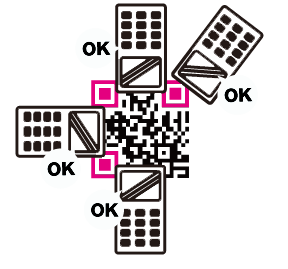
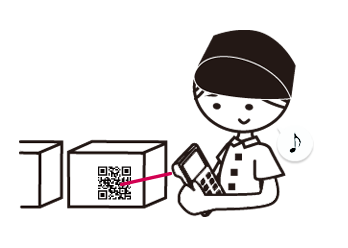
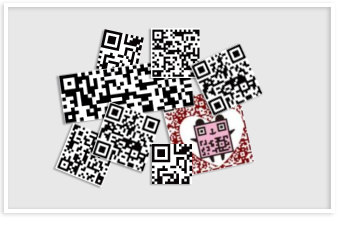
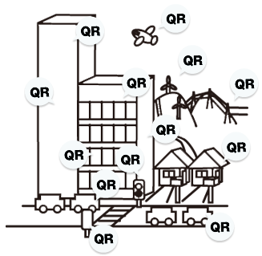

Cash registers that were then used at checkout counters in these stores required the price to be keyed in manually. Because of this, many cashiers suffered from numbness in the wrist and carpal tunnel syndrome.
"Cashiers desperately longed for some way to lighten their burden."
The invention of barcodes provided a solution to this problem. Subsequently the POS system was developed, in which the price of an item of merchandise was displayed on the cash register automatically when the barcode on the item was scanned by an optical sensor, and information on the item was sent to a computer at the same time.
As the use of barcodes spread, however, their limitations became apparent as well. The most prominent was the fact that a barcode can only hold 20 alphanumeric characters or so of information.
Users contacted DENSO WAVE INCORPORATED (then a division of DENSO CORPORATION) who were developing barcode readers at that time to ask them whether it was possible to develop barcodes that could hold more information, saying, “We'd like the capability to code Kanji and Kana characters as well as alphanumeric ones.”
Encouraged by these enthusiastic requests, a development team at DENSO WAVE embarked on the development of a new two-dimensional code, all out of their sincere desire to accommodate users' needs.
Looking back on those days, Masahiro Hara in charge of the development of the QR Code then remembers that people who were developing 2D codes at other companies were all obsessed with packing as much information as possible into their codes.
With barcodes, information is coded in one direction (one dimension) only. With 2D codes, on the other hand, information is coded in two directions: across and up/down., Out of a strong desire to develop a code that could be read easily as well as being capable of holding a great deal of information, Hara set out to develop a new 2D code. He dared to try this with only one other person as his team member.
The greatest challenge for the team was how to make reading their code as fast as possible. One day, he hit on the idea that their problem might be solved by adding positional information indicating the existence of a code to be read.
This was how the position detecting pattern made up of square marks came into being. By incorporating these marks into their code, high-speed reading became possible.
So far so good, but why did the marks have to be squares rather than any other shape?
According to Hara this was because “it was the pattern least likely to appear on various business forms and the like.”
If a position detection pattern is used in a code and there is a similar-looking mark nearby, the code reader may mistake it for the position detection patterns. To avoid this type of erroneous reading, their position detection patterns had to be truly unique. After mulling over this problem thoroughly, they decided to do an exhaustive survey of the ratio of white to black areas in pictures and symbols printed on fliers, magazines, cardboard boxes and so on after reducing them to patterns with black and white areas. They continued the task of surveying innumerable examples of printed matter all day long for days on end. Eventually, they came up with the least used ratio of black and white areas on printed matter. This ratio was 1:1:3:1:1. This was how the widths of the black and white areas in the position detection patterns were decided upon. In this way, a contrivance was created through which the orientation of their code could be determined regardless of the angle of scanning, which could be any angle out of 360°, by searching for this unique ratio.
A year and a half after the development project was initiated and after innumerable and repeated trial and error, a QR Code capable of coding about 7,000 numerals with the additional capability to code Kanji characters was finally created. This code could not only hold a great deal of information, but it could also be read more than 10 times faster than other codes.
In 1994, DENSO WAVE (then a division of DENSO CORPORATION) announced the release of its QR Code. The QR in the name stands for quick response, expressing the development concept for the code, whose focus was placed on high-speed reading. When it was announced, however, even Hara, one of the original developers of the code, could not be sure whether it would actually be accepted as a two-dimensional code to replace barcodes. He had confidence in the performance of the code, however, and was eager to make the rounds of companies and industry organizations concerned to introduce it in the hope that it would become known and used by as many people as possible.
As a result of his efforts, the QR Code was adopted by the auto industry for use in their electronic Kanban*, and it contributed greatly to making their management work efficient for a wide range of tasks from production to shipping to the issuing of transaction slips. Also, in response to a newly-emerging societal trend where people demanded that the industries' production processes be made transparent partly to make products traceable, food, pharmaceutical and contact lens companies began to use the code to control their merchandise. Particularly, after incidents such as the BSE problem* that threatened food safety, the industry had to respond to consumers' demands that the whole processes of production and logistics for the foods that ended up on their dining tables be made completely transparent. The QR Code became an indispensable medium that could store a great deal of information on these processes.
There was still another factor that contributed greatly to spreading the use of the code, and that was DENSO WAVE's decision to make the specifications of the QR Code publicly available so that anyone could use it freely.
Although DENSO WAVE would retain the patent rights to the QR Code, it declared that it would not exercise them. This policy was in place from the very beginning of the code development, honoring the developers' intent that the QR Code could be used by as many people as possible. Thus the QR Code, which could be used at no cost and without worrying about potential problems, grew into a “public code” used by people all over the world.
It was in 2002 that use of the code became widespread among the general public in Japan. What facilitated this trend was the marketing of mobile phones with a QR Code-reading feature. These phones make it possible for people to access a website or obtain a coupon by just scanning a strange, eye-catching pattern. The sheer convenience helped to rapidly heighten the popularity of the code among the general public. And now, it is an indispensable tool for businesses and in people's daily lives, used in all sorts of ways including for issuing name cards and electronic tickets and in flight ticket issuing systems implemented at airports.
Since the QR Code is an open code that anyone is allowed to use, it is used not only in Japan, but also in countries all over the world. As rules for its use were stipulated and the code was standardized, its use spread further. In 1997, it was approved as an AIM standard* to be used in the automatic identification industry. In 1999, it was approved as a standard 2D code by the Japan Industrial Standards* and made a standard 2D symbol on the Japan Automobile Manufacturers Association's EDI standard transaction forms*. Still more, in 2000 it was approved by the ISO* as one of its international standards. At present, the use of the QR Code is so widespread that it is no exaggeration to say that it is used everywhere in the world.
As has been described, evolutionary improvements have constantly been made to QR Codes, based on the technological expertise accumulated at DENSO WAVE, so that any of a wide range of varieties can be chosen to meet a specific need.
In 2012, the QR Code won a prize in the Media for Industry category of the Good Design Award* established in Japan to comprehensively promote industrial design. The reason that the QR Code received this award is described as follows: “Its developers took on the challenge of developing a variety of codes through designing, had the foresight to place its technologies in the public domain from the early stages of development and designed a system that has allowed natural uses of the code in people's daily lives.” Eighteen years after the creation of the QR Code, this was the first time that, apart from the QR Code’s inherent functionality, the design of methods for spreading the code's use and ways in which the code can be used was acknowledged and honored publicly.
Hara goes on to say, “Black and white codes have become so mundane now. I’d like to create more spectacular QR Codes that can stimulate people.”
In reply to a question asking him what kind of people he hopes will use the QR Code, he says:“I don’t dare specify what kind of people will use it. I just want to let a lot of people use the code, come up with new ways of using it with them, and put these ideas into practice. This is the way, I’d like to think, that evolutionary improvements have been made to the QR Code.”
And he concludes this interview by saying, “This is my policy.”
The use of this technology is now free. The QR Code is not the only two-dimensional barcode in market, another example is the Data Matrix code.
QR Code is the most 2D barcode in the world. It has gained its success in Japan since the 2000s where he is now a standard. In 2011, an average of 5 QR Codes were scanned daily by each Japanese - more than the average number of SMS sent. In 2010 QR Codes started to expand in the USA then in Europe where they can notably be seen in advertisements.